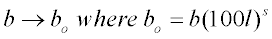
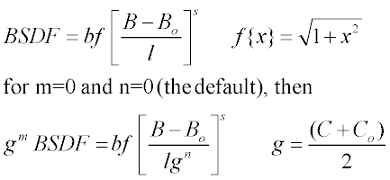
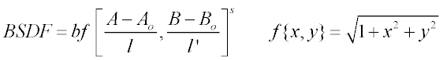

Creates a Harvey (linear shift invariant) scatter model or simple specific model.
Syntax 1 - isotropic model
HARVEY b s [ l [ m [ n [ w ] ] ] ] [ PLOT [ a a' ... ] ]
Syntax 2 - anisotropic model
HARVEY X b s l l' [ w ]
Y
Z
:
| Option | Description |
|---|
| b | BSDF at 0.01 radians (0.573 degrees) from specular; if l is used b is the
maximum BSDF (at specular). |
| s | asymptotic fall-off with angle (typically between -1 to -2.5) |
| l and l' | A-Ao and B-Bo shoulder point in radians (see Remarks) |
| m, n | 2 additional invariance parameters postulated for rough surfaces |
| w | wavelength (in current or eventual wavelength units) |
| PLOT | plots the model in log(b-bo) and angle space |
| a a' ... | user-defined degree specular angles |
Remarks
- The out-of-field analog to the SCATTER BSDF command.
- Use with importance area sampling.
- If l is used,

Simple, specific (isotropic) models:
- If the optional b-bo shoulder point
l (in radians) is given, b is the maximum
BSDF (at specular). These parameters describe a shift-invariant generalized
Lorentzian function of B-Bo that normally fits the scatter from smooth surfaces (RMS
as well as wavelength) extremely well.
- The m and n are two additional invariance parameters postulated for rough surfaces;
that is, if:

where B, C are the sine, cosine of the scatter angle from
normal and Bo, Co are the sine, cosine of the specular angle. For
typical rough surfaces, m is approximately 2 and n around 1.
- The w is the wavelength
(in current or eventual wavelength units) at which this model is defined (or was
measured).
Elliptical (Anisotropic) Harvey model:
- Scattering from anisotropic surfaces is not
rotationally symmetric at normal incidence and not necessarily symmetric about the
plane of incidence otherwise. Therefore, the orientation of the model on the surface
is important and is generally specified by an axis for the second command entry. For
syntax information, see the command argument, MODEL.
- The b is the maximum
BSDF (at specular), s is the asymptotic fall-off with angle
(typically between -1 to -2.5). The l and l' are the A-Ao
and B-Bo shoulder points in radians. More precisely,

where A, B are the scatter direction cosines and Ao, Bo are the specular.
Both models
- The w is the wavelength
(in current or eventual wavelength units) at which this model is defined (or was
measured). The default is the current value from the last WAVELENGTH command. If it is greater than zero, any ray whose wavelength
is different automatically has its scatter scaled according to the smooth surface
approximation.
- Command argument, PLOT
plots the model (common base 10 logarithm of the BSDF) for up to seven specular
angles in ascending order (default 0, 15, 30, 45, 60, 75, 89.9 degrees). The current
PIXELS setting controls the resolution of these plots in
direction cosine space. Also, creates a distribution file name_angle.dis for each of
these angles.
- The command argument, MINMAX may be used to set the minimum and maximum values of the BSDF for
this specific model.
HARVEY Examples